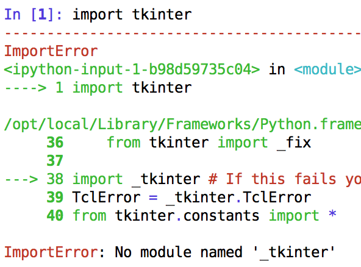
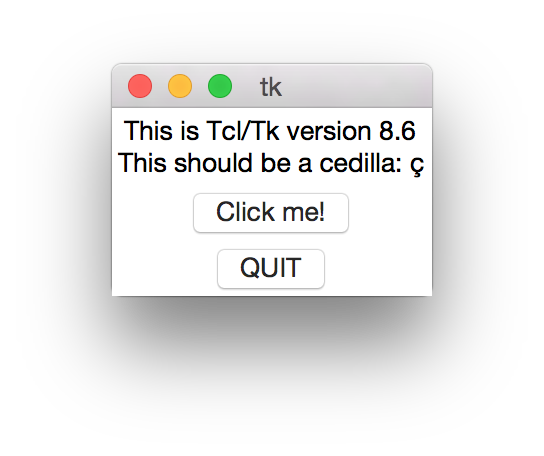

How to install tkinter with Python 3 on Mac

Tkinter is an old GUI toolkit, that has been popular also in some Python projects. Sometimes it might be tricky to install. If you just can't get past ImportError: No module named '_tkinter', read on. We'll install it with Python 3.4 on Mac OX S Yosemite and macports.
We're assuming to have a Python 3 installation, possibly inside a pyvenv.
If we'd like to use tkinter, we get the following error:
$ python
>>> import tkinter --------------------------------------------------------------------------- ImportError Traceback (most recent call last) <ipython-input-1-b98d59735c04> in <module>() ----> 1 import tkinter /opt/local/Library/Frameworks/Python.framework/Versions/3.4/lib/python3.4/tkinter/__init__.py in <module>() 36 from tkinter import _fix 37 ---> 38 import _tkinter # If this fails your Python may not be configured for Tk 39 TclError = _tkinter.TclError 40 from tkinter.constants import * ImportError: No module named '_tkinter'
First we check that we have the tkinter package installed and it's in the Python module path.
For Python 3.4 there's a port named py34-tkinter:
$ sudo port install py34-tkinter
The installed files are here:
$ port contents py34-tkinter Port py34-tkinter contains: /opt/local/Library/Frameworks/Python.framework/Versions/3.4/lib/python3.4/site-packages/_tkinter.so /opt/local/Library/Frameworks/Python.framework/Versions/3.4/lib/python3.4/site-packages/tkinter-0.0.0-py3.4.egg-info
However the module is not in the Python path (note the site-packages/ subdirectory):
$ python -c 'import sys; print(*sys.path, sep="\n")' /opt/local/Library/Frameworks/Python.framework/Versions/3.4/lib/python34.zip /opt/local/Library/Frameworks/Python.framework/Versions/3.4/lib/python3.4 /opt/local/Library/Frameworks/Python.framework/Versions/3.4/lib/python3.4/plat-darwin /opt/local/Library/Frameworks/Python.framework/Versions/3.4/lib/python3.4/lib-dynload
It seems that the py34-tkinter package should put the _tkinter.so file one directory level higher. We can hack it by making a symlink:
$ TKMODULE=$(port contents py34-tkinter|grep _tkinter.so) $ sudo ln -s $TKMODULE $(echo $TKMODULE|sed 's/site-packages\///')
If it's ok, the tkinter module can be imported without any error:
$ python -m tkinter
Importing the module this way opens up a small testing GUI dialog.
Hope this helps!

Comments
Comments powered by Disqus